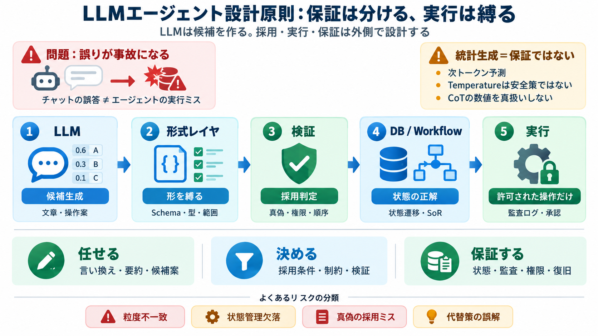

LLMの構造的限界から考える、AIエージェントの設計原則
モデルが学習によってうまく出来るようになることはあります。それでも「できること」と「その表現形式が操作を保証していること」は違います。本番で文字単位の正確さが必要なら、コード、Parser、Schema、制約付きの出力、Validator …

モデルが学習によってうまく出来るようになることはあります。それでも「できること」と「その表現形式が操作を保証していること」は違います。本番で文字単位の正確さが必要なら、コード、Parser、Schema、制約付きの出力、Validator …
プロンプト管理とLLMインターフェース：多様な言語モデル（GPT-4、Claude、Geminiなど）と接続し、指示を最適化する機能 メモリ・状態管理（ステート管理）：過去の対話履歴や現在進行中のタスクの進捗を記憶し、文脈を維持する機能 …
Note これらの制限の多くは、エージェントが対処するように設計されているものです。 ツールを使用すると、エージェントはリアルタイムの知識を操作または取得したり、コードを実行して応答を取得したりでき、セッションは永続的なメモリを提供します…
## LLMエージェントとは？ LLMエージェントは、大規模言語モデルの上に構築されたインテリジェントなシステムであり、単にプロンプトに応答するだけでなく、行動を起こすように設計されています。計画を立て、推論し、ツールを使用し、メモリを維…
### なぜトークン消費が増えるのか 1. コマンド出力の冗長性 `git status`や`ls -la`の出力には、LLMが本当に必要とする情報以外のものが大量に含まれる。パーミッション情報、タイムスタンプ、無関係なファイルパス——こ…